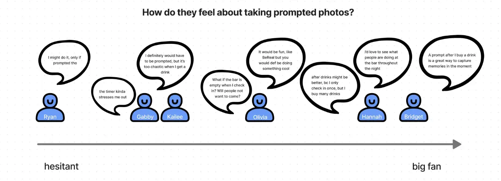

04
What we learned
Users are producing content. Almost nobody is consuming it. LineLeap had successfully paid people to post, and had not built a feed anyone went out of their way to read. Users called social the "cherry on top" of the app, not the reason they opened it.
We ask for attention at the worst moment of the night
Going out is chaotic. People are drinking, talking to the friends they came with, often on bad reception, and most only open social while at the bar. Rewards bought production. Consumption competes with the entire night.
So stop asking users to work harder at a feed: LineLeap can tell someone where their friends are from its own data instead of waiting for those friends to post it.
Rewards drive production, and nobody can explain them
- 88.8% post for rewards. Fun is second at 63.7%, "my friends do it" third at 44.7%.
- About half couldn't say how they were earning points.
- Half didn't know they auto-earn after redeeming a pass.
- Rewards work per venue, which is most of why they read as unattainable.
A comprehension problem before a generosity problem, which mattered because the instinct in the room was to add more rewards.
Consumption breaks at friend-adding
Users add friends in the first few minutes after download or never. Contact books don't match who they want to follow. Pending requests go unnoticed.
"I don't think I have friends. When I check there are people who come up, it's from contacts, it's too random of people for me to want to add them."
So the friends feed is empty and explore is too random. But the obvious fix was the wrong one: only 18% would stop posting if friends didn't look, and 57% disagreed. Audience size barely matters. Audience identity does.
"I don't have their phone number, but I might still hang out with them at night and want to see their pictures."
Low-stakes discovery already existed and nobody had noticed: tapping a post to see who gave it gems, to "see whose name I recognize," without the commitment of a follow request.
There is no single answer on audience

Nobody was sure what "public" meant. Described as the city or the internet, people hesitated. Described as the other people at the bar, the hesitation dropped. Safety was part of it, and school-email verification came up unprompted. That is the other half of the blank-screen finding.
What works: the status, and the prompt
The status is "the heart of the post." The pre-written options are funny and relatable, picking one is a low-stakes way to show what you're up to, and they're cheap to retune to pop culture and college sports.
83% enjoy posting in real time, and participants kept reaching for BeReal as the comparison. Enthusiasm isn't uniform, but the objections are specific and fixable.

Same rule for competitions: low stakes beats a big prize. The Halloween contest worked because it took a photo people were already taking.
The venue is loyalty LineLeap already has
Students are devoted to their bar, follow it on Instagram for information that is often stale, and value venue merch well above generic rewards. Venue involvement made them measurably more willing to enter a competition. Two directions came out of it: a person posting from the bar rather than a brand account, and venue-hosted competitions with venue-provided prizes.
None of it generalizes evenly
A smaller market, defined by how established LineLeap is there rather than by school size, behaves differently from a mature one. Low presence means an empty feed, and empty feeds don't recruit posters. Market context got its own section in the report so the business could work campus by campus.